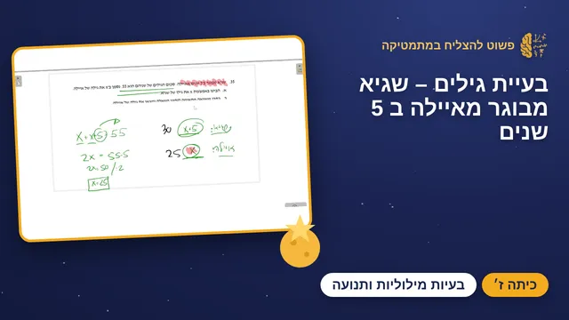
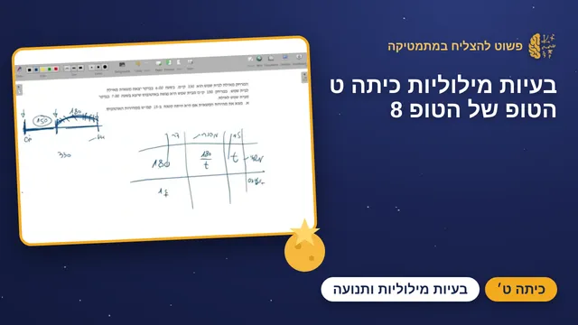
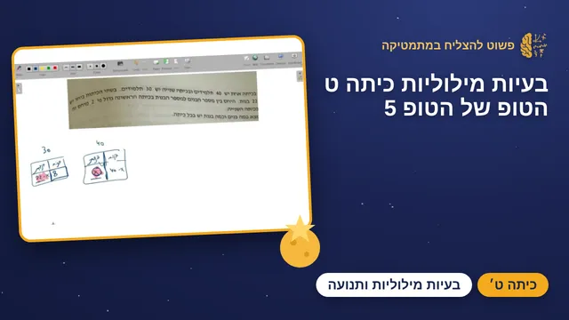
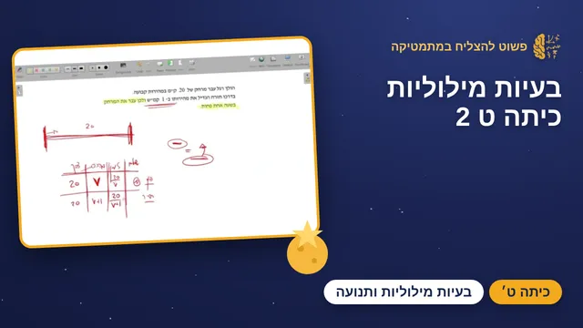
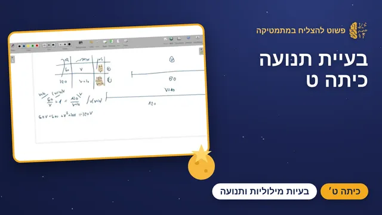
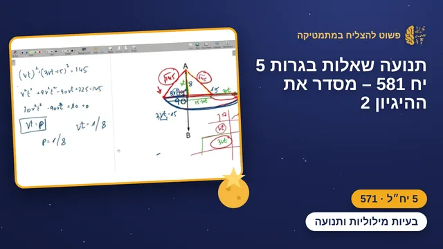
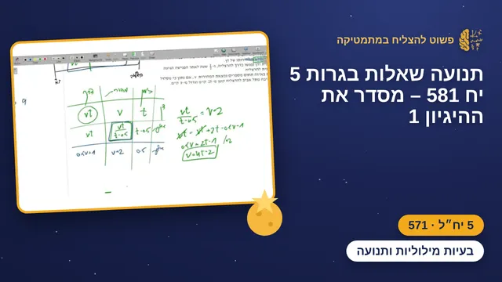

פשוט להצליח במתמטיקה › כל הנושאים › בעיות מילוליות ותנועה
בעיות מילוליות ותנועה – סרטוני הסבר ותרגול
41 סרטוני הסבר ותרגול בנושא בעיות מילוליות ותנועה – לכיתה ז׳, כיתה ח׳, כיתה ט׳, שאלון 471, שאלון 571. כל נושא מוסבר מהקל אל הקשה: קודם הרעיון, אחר כך תרגילים, ובסוף שאלות בסגנון בגרות. הכול בחינם, בשיטת "פשוט להצליח".
רוצים לעקוב אחרי ההתקדמות?נרשמים בחינם, וכל סרטון שראיתם מסומן ✓. ממשיכים מכל מכשיר.
הצטרפות בחינם ←בעיות מילוליות ותנועה – כיתה ז׳ כל הנושאים של כיתה ז׳ ←

בעיית גילים – שגיא מבוגר מאיילה ב 5 שנים בעיה מילולית עם שברים – מספר שהסכום של 5∕12 ו 1∕5 ממנו
בעיה מילולית עם שברים – מספר שהסכום של 5∕12 ו 1∕5 ממנו בעיה מילולית – מחירי משולשי פיצה בניית משוואה
בעיה מילולית – מחירי משולשי פיצה בניית משוואה בעיות מילוליות כיתה ז וח עם נעלם אחד 1
בעיות מילוליות כיתה ז וח עם נעלם אחד 1 בעיות מילוליות כיתה ז וח עם נעלם אחד 2
בעיות מילוליות כיתה ז וח עם נעלם אחד 2בעיות מילוליות ותנועה – כיתה ח׳ כל הנושאים של כיתה ח׳ ←
בעיה מילולית עם שברים – מספר שהסכום של 5∕12 ו 1∕5 ממנובעיה מילולית – מחירי משולשי פיצה בניית משוואהבעיות מילוליות כיתה ז וח עם נעלם אחד 1בעיות מילוליות כיתה ז וח עם נעלם אחד 2בעיה מילולית עם נעלם אחד כיתה ח נעלם אחד – בעיה מילולית כיתה ח
נעלם אחד – בעיה מילולית כיתה ח בעיה מילולית כיתה חבעיה מילולית עם נעלם אחד – הבנת הנקרא
בעיה מילולית כיתה חבעיה מילולית עם נעלם אחד – הבנת הנקרא להפוך תרגיל מילולי למשוואה עם אחוזים – נעלם אחד
להפוך תרגיל מילולי למשוואה עם אחוזים – נעלם אחד בעיה מילולית – הבנת הנקרא · סרטון קצר
בעיה מילולית – הבנת הנקרא · סרטון קצר בעיות מילוליות – הגדרת משתנים · סרטון קצר
בעיות מילוליות – הגדרת משתנים · סרטון קצרבעיות מילוליות ותנועה – כיתה ט׳ כל הנושאים של כיתה ט׳ ←

בעיות מילוליות כיתה ט הטופ של הטופ 8 בעיות מילוליות כיתה ט הטופ של הטופ 2
בעיות מילוליות כיתה ט הטופ של הטופ 2 בעיות מילוליות כיתה ט הטופ של הטופ 6
בעיות מילוליות כיתה ט הטופ של הטופ 6
בעיות מילוליות כיתה ט הטופ של הטופ 5 בעיות מילוליות כיתה ט הטופ של הטופ 4
בעיות מילוליות כיתה ט הטופ של הטופ 4 בעיות מילוליות כיתה ט הטופ של הטופ 3
בעיות מילוליות כיתה ט הטופ של הטופ 3 בעיות מילוליות כיתה ט הטופ של הטופ 1
בעיות מילוליות כיתה ט הטופ של הטופ 1
בעיות מילוליות כיתה ט 2 בעיות מילוליות כיתה ט 1
בעיות מילוליות כיתה ט 1 בעיות מילוליות כיתה ט 3
בעיות מילוליות כיתה ט 3
בעיית תנועה כיתה ט תרגיל סיפור – להעביר למשוואות עם 2 נעלמיםלהפוך תרגיל מילולי למשוואה עם אחוזים – נעלם אחד
תרגיל סיפור – להעביר למשוואות עם 2 נעלמיםלהפוך תרגיל מילולי למשוואה עם אחוזים – נעלם אחדבעיות מילוליות ותנועה – שאלון 471 כל הנושאים של שאלון 471 ←
 בעיית תנועה – שני סטודנטים, אוטובוס ואופניים
בעיית תנועה – שני סטודנטים, אוטובוס ואופניים בעיות תנועה – שאלה טובה שמסדרת את הראשתרגיל סיפור – להעביר למשוואות עם 2 נעלמים
בעיות תנועה – שאלה טובה שמסדרת את הראשתרגיל סיפור – להעביר למשוואות עם 2 נעלמיםבעיות מילוליות ותנועה – שאלון 571 כל הנושאים של שאלון 571 ←
בעיית תנועה – שני סטודנטים, אוטובוס ואופניים
תנועה שאלות בגרות 5 יח 581 – מסדר את ההיגיון 2
תנועה שאלות בגרות 5 יח 581 – מסדר את ההיגיון 1 תנועה שאלות בגרות 5 יח 581 – מסדר את ההיגיון 3
תנועה שאלות בגרות 5 יח 581 – מסדר את ההיגיון 3 תנועה שאלות בגרות 5 יח 581 – מסדר את ההיגיון 4בעיות תנועה – שאלה טובה שמסדרת את הראשתרגיל סיפור – להעביר למשוואות עם 2 נעלמיםשאלת תנועה 5 יח – איך ניגשים נכון לשאלהתנועה 5 יח 581 – שאלה פתורהשאלת תנועה – שאלה 1 בגרות חורף 2024 806 581
תנועה שאלות בגרות 5 יח 581 – מסדר את ההיגיון 4בעיות תנועה – שאלה טובה שמסדרת את הראשתרגיל סיפור – להעביר למשוואות עם 2 נעלמיםשאלת תנועה 5 יח – איך ניגשים נכון לשאלהתנועה 5 יח 581 – שאלה פתורהשאלת תנועה – שאלה 1 בגרות חורף 2024 806 581 תנועה שאלת בגרות 581קיץ 2023 מועד ב – שאלת תנועה 806 581 5 יחקיץ 2021 מועד ב – שאלת תנועה 806 581 5 יחשאלת תנועה 806 581 5 יח – שאלת בגרותקיץ 2019 מועד ב – שאלת תנועה 806 581 5 יח
תנועה שאלת בגרות 581קיץ 2023 מועד ב – שאלת תנועה 806 581 5 יחקיץ 2021 מועד ב – שאלת תנועה 806 581 5 יחשאלת תנועה 806 581 5 יח – שאלת בגרותקיץ 2019 מועד ב – שאלת תנועה 806 581 5 יח קיץ 2015 מועד ב – שאלת תנועה שאלה 1 581 806חורף 2022 נבצרים 581 – בעיות תנועהחורף 2021 מועד א 581 – בעיות תנועה
קיץ 2015 מועד ב – שאלת תנועה שאלה 1 581 806חורף 2022 נבצרים 581 – בעיות תנועהחורף 2021 מועד א 581 – בעיות תנועה